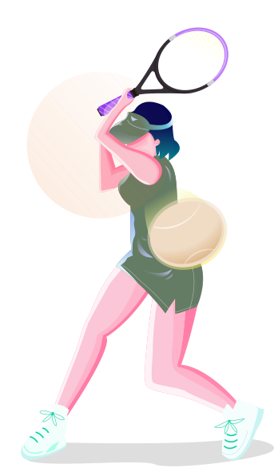

Kelionių žemėlapis · nuo 2024
Kiekviena kelionė prasideda čia
Automobilis, laivas, autobusas ar tiesiog ilgas kelias. Išsirink savo transportą, o maršrutą nubraižysime kartu.
- maršrutų
- 128+
- transporto rūšys
- 4
- laimingų keliautojų
- 98%

Maršrutai
Kokia tavo kelionė?
Pasirink transportą, ir fone užsidegs jo maršrutas.
-
Automobilio nuoma
Pasiimk raktelius oro uoste ir važiuok ten, kur veda smalsumas.
-
Laivo kruizas
Ramūs vandenys, jūros vėjas ir saulėlydžiai, kurių nepamirši.
-
Kelionė autobusu
Atsilošk, įsijunk mėgstamą muziką ir leisk vairuoti kitiems.
-
Kelionė keliu
Tik tu, žemėlapis ir horizontas. Sustok, kur tik panorėsi.
-
Ežerų plaukimas
Baidarės ir mažas laivelis per Aukštaitijos ežerų grandinę.
-
Pajūrio savaitgalis
Kopos, žuvienė ir vėjas plaukuose. Viskas per vieną savaitgalį.
Kodėl mes
Kelionė be streso
-
Maršrutas pagal tave
Pasakyk, ką mėgsti, o mes sudėliosime sustojimus ir laiką.
-
Saugūs partneriai
Dirbame tik su patikrintais vežėjais ir nuomos punktais.
-
Pagalba 24/7
Vėluoja keltas ar pradurta padanga? Atsakome bet kuriuo paros metu.
Planuojame kartu
Tavo kelionė, mūsų žemėlapis
Mūsų komanda išbandė kiekvieną maršrutą pati. Todėl žinome, kur verta sustoti kavos, kur geriausias vaizdas ir kur laukia paslėpti perlai.
Gauti idėjųAtsiliepimai
Ką sako keliautojai
-
„Kruizas buvo tobulas. Viską suplanavo už mane, o aš tik mėgavausi saulėlydžiais.“
Mia Rivers
Laivo kruizas · Klaipėda
-
„Via Baltica per tris dienas. Kiekvienas sustojimas buvo lyg maža staigmena.“
Sam Carter
Kelionė keliu · Via Baltica
-
„Pirmą kartą keliavau autobusu ir nė karto nesijaudinau. Pagalba atsakė per minutę.“
Alex Doe
Autobusas · Vilnius → Ryga
-
„Išsinuomojom automobilį oro uoste ir po keturių valandų jau stovėjom ant kopos.“
Jo Lane
Automobilio nuoma · Nida